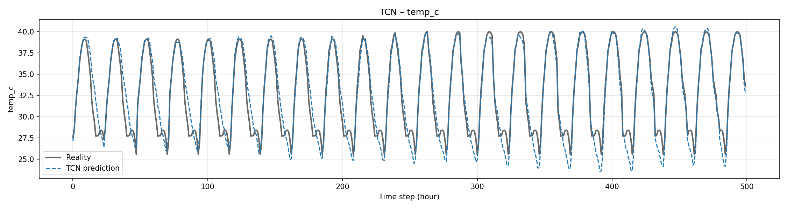
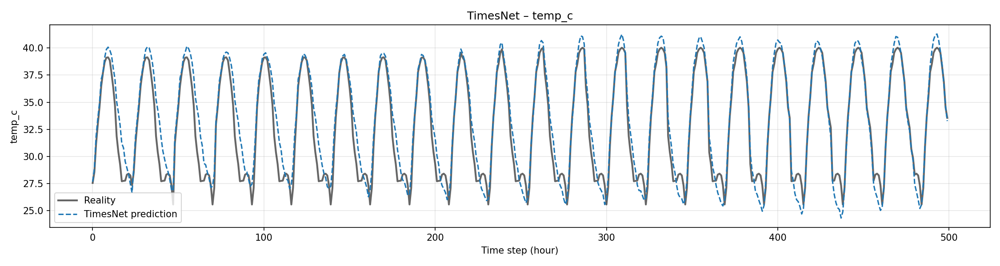

{'mse': 2.3225371837615967, 'mae': 1.1010596752166748, 'rmse': np.float64(1.5239872649604382)}
{'mse': 2.8945133686065674, 'mae': 1.292146921157837, 'rmse': np.float64(1.7013269434786975)}
{'temp_c': {'mae': 1.1010596752166748, 'rmse': np.float64(1.5239872649604382)}}
{'temp_c': {'mae': 1.292146921157837, 'rmse': np.float64(1.7013269434786975)}}

